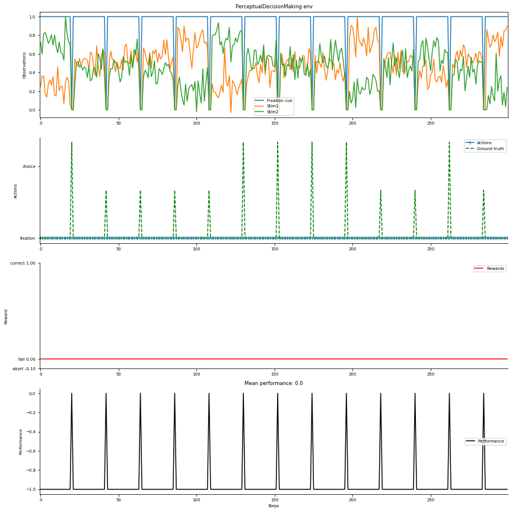
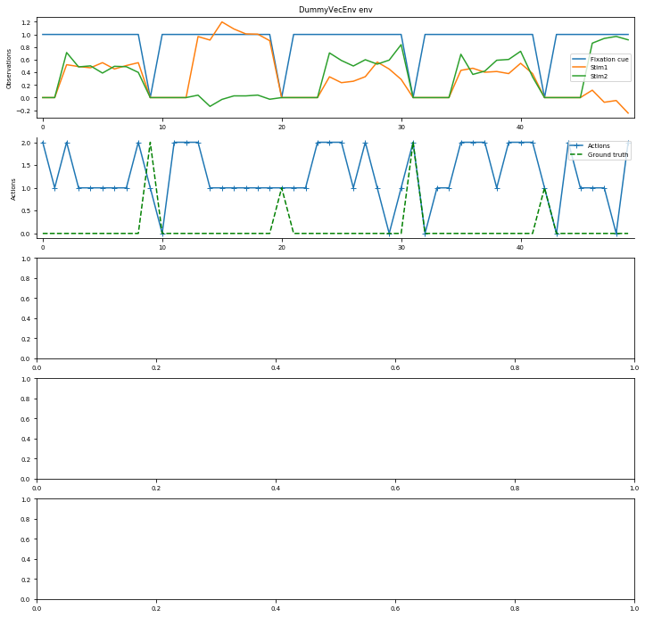

Exploring NeuroGym tasks¶
NeuroGym is a comprehensive toolkit that allows training any network model on many established neuroscience tasks using Reinforcement Learning techniques. It includes working memory tasks, value-based decision tasks and context-dependent perceptual categorization tasks.
In this notebook we first show how to install the relevant toolbox.
We then show how to access the available tasks and their relevant information.
Finally we train an LSTM network on the Random Dots Motion task using the A2C algorithm Mnih et al. 2016 implemented in the stable-baselines toolbox, and plot the results.
You can easily change the code to train a network on any other available task or using a different algorithm (e.g. ACER, PPO2).
Installation on google colab¶
[6]:
%tensorflow_version 1.x
# Install gym
! pip install gym
# Install neurogym
! git clone https://github.com/gyyang/neurogym.git
%cd neurogym/
! pip install -e .
# Install stable-baselines
! pip install --upgrade stable-baselines
UsageError: Line magic function `%tensorflow_version` not found.
Explore tasks¶
[1]:
import warnings
import gym
import neurogym as ngym
from neurogym.utils import info, plotting
warnings.filterwarnings('ignore')
info.all_tasks()
AngleReproduction-v0
AntiReach-v0
Bandit-v0
CVLearning-v0
ChangingEnvironment-v0
ContextDecisionMaking-v0
DawTwoStep-v0
DelayComparison-v0
DelayMatchCategory-v0
DelayMatchSample-v0
DelayMatchSampleDistractor1D-v0
DelayPairedAssociation-v0
Detection-v0
DualDelayMatchSample-v0
EconomicDecisionMaking-v0
GoNogo-v0
HierarchicalReasoning-v0
IntervalDiscrimination-v0
MatchingPenny-v0
MotorTiming-v0
MultiSensoryIntegration-v0
NAltPerceptualDecisionMaking-v0
Nothing-v0
OneTwoThreeGo-v0
PerceptualDecisionMaking-v0
PerceptualDecisionMakingDelayResponse-v0
PostDecisionWager-v0
ProbabilisticReasoning-v0
PulseDecisionMaking-v0
Reaching1D-v0
Reaching1DWithSelfDistraction-v0
ReachingDelayResponse-v0
ReadySetGo-v0
psychopy.RandomDotMotion-v0
psychopy.VisualSearch-v0
Visualize a single task¶
[2]:
task = 'PerceptualDecisionMaking-v0'
env = gym.make(task);
print(env)
plotting.plot_env(env, num_steps=300, def_act=0, ob_traces=['Fixation cue', 'Stim1', 'Stim2'], fig_kwargs={'figsize': (12, 12)});
findfont: Font family ['arial'] not found. Falling back to DejaVu Sans.
findfont: Font family ['arial'] not found. Falling back to DejaVu Sans.
### PerceptualDecisionMaking
Doc: Two-alternative forced choice task in which the subject has to
integrate two stimuli to decide which one is higher on average.
Args:
stim_scale: Controls the difficulty of the experiment. (def: 1., float)
sigma: float, input noise level
dim_ring: int, dimension of ring input and output
Reference paper
[The analysis of visual motion: a comparison of neuronal and psychophysical performance](https://www.jneurosci.org/content/12/12/4745)
Period timing (ms)
fixation : constant 100
stimulus : constant 2000
decision : constant 100
Reward structure
abort : -0.1
correct : 1.0
fail : 0.0
Tags: perceptual, two-alternative, supervised.

Explore wrappers¶
[3]:
info.all_wrappers()
CatchTrials-v0
Combine-v0
Identity-v0
MissTrialReward-v0
Monitor-v0
Noise-v0
PassAction-v0
PassReward-v0
ReactionTime-v0
SideBias-v0
TTLPulse-v0
TransferLearning-v0
TrialHistory-v0
[4]:
info.info_wrapper('TrialHistory-v0', show_code=True);
### TrialHistory-v0
Logic: Change ground truth probability based on previousoutcome.
Reference paper
[Response outcomes gate the impact of expectations on perceptual decisions](https://www.biorxiv.org/content/10.1101/433409v3)
#### Source code ####
class TrialHistory(ngym.TrialWrapper):
"""Change ground truth probability based on previous outcome.
Args:
probs: matrix of probabilities of the current choice conditioned
on the previous for each block. (def: None, np.array,
num-blocks x num-choices x num-choices)
block_dur: Number of trials per block. (def: 200 (int))
blk_ch_prob: If not None, specifies the probability of changing block
(randomly). (def: None, float)
"""
metadata = {
'description': 'Change ground truth probability based on previous' +
'outcome.',
'paper_link': 'https://www.biorxiv.org/content/10.1101/433409v3',
'paper_name': 'Response outcomes gate the impact of expectations ' +
'on perceptual decisions'
}
def __init__(self, env, probs=None, block_dur=200,
blk_ch_prob=None):
super().__init__(env)
try:
self.choices = self.task.choices
except AttributeError:
raise AttributeError('''SideBias requires task
to have attribute choices''')
self.n_ch = len(self.choices)
assert isinstance(self.task, ngym.TrialEnv), 'Task has to be TrialEnv'
assert probs is not None, 'Please provide choices probabilities'
if isinstance(probs, float):
num_blocks = 2
tr_mat =\
np.zeros((num_blocks, self.n_ch, self.n_ch)) +\
(1-probs)/(self.n_ch-1)
for ind in range(self.n_ch-1):
tr_mat[0, ind, ind+1] = probs
tr_mat[1, ind, ind] = probs
tr_mat[0, self.n_ch-1, 0] = probs
tr_mat[1, self.n_ch-1, self.n_ch-1] = probs
probs = tr_mat
assert probs.shape[1] == self.n_ch,\
'The number of choices {:d}'.format(probs.shape[1]) +\
' inferred from prob mismatchs {:d}'.format(self.n_ch) +\
' inferred from choices'
self.n_block = probs.shape[0]
self.curr_block = self.task.rng.choice(range(self.n_block))
self.probs = probs
self.block_dur = block_dur
self.prev_trial = -1
self.blk_ch_prob = blk_ch_prob
print(self.probs.shape)
def new_trial(self, **kwargs):
# ---------------------------------------------------------------------
# Periods
# ---------------------------------------------------------------------
# change rep. prob. every self.block_dur trials
if self.blk_ch_prob is None:
if self.task.num_tr % self.block_dur == 0:
self.curr_block = (self.curr_block + 1) % self.n_block
else:
if self.task.rng.random() < self.blk_ch_prob:
self.curr_block = (self.curr_block + 1) % self.n_block
probs_curr_blk = self.probs[self.curr_block, self.prev_trial, :]
ground_truth = self.task.rng.choice(self.choices,
p=probs_curr_blk)
self.prev_trial = np.where(self.choices == ground_truth)[0][0]
kwargs.update({'ground_truth': ground_truth})
self.env.new_trial(**kwargs)
Train a network¶
[5]:
import warnings
import numpy as np
from neurogym.wrappers import trial_hist, monitor
from stable_baselines.common.policies import LstmPolicy
from stable_baselines.common.vec_env import DummyVecEnv
from stable_baselines import A2C # ACER, PPO2
warnings.filterwarnings('default')
# task paremters
task = 'PerceptualDecisionMaking-v0'
timing = {'fixation': ('constant', 300),
'stimulus': ('constant', 700),
'decision': ('constant', 300)}
kwargs = {'dt': 100, 'timing': timing, 'stim_scale': 2}
# wrapper parameters
n_ch = 2
p = 0.8
num_blocks = 2
block_1 = np.array([[p, 1-p], [1-p, p]]) # repeating block
block_2 = np.array([[1-p, p], [p, 1-p]]) # alternating block
probs = np.empty((num_blocks, n_ch, n_ch))
probs[0, :, :] = block_1
probs[1, :, :] = block_2
block_dur = 50
# build task
env = gym.make(task, **kwargs)
# Apply the wrapper
env = trial_hist.TrialHistory(env, probs=probs, block_dur=block_dur)
env = monitor.Monitor(env, folder='content/tests/', sv_per=10000, verbose=1, sv_fig=True, num_stps_sv_fig=100)
# the env is now wrapped automatically when passing it to the constructor
env = DummyVecEnv([lambda: env])
model = A2C(LstmPolicy, env, verbose=1, policy_kwargs={'feature_extraction':"mlp"})
model.learn(total_timesteps=500000, log_interval=100000)
env.close()
WARNING:tensorflow:
The TensorFlow contrib module will not be included in TensorFlow 2.0.
For more information, please see:
* https://github.com/tensorflow/community/blob/master/rfcs/20180907-contrib-sunset.md
* https://github.com/tensorflow/addons
* https://github.com/tensorflow/io (for I/O related ops)
If you depend on functionality not listed there, please file an issue.
(2, 2, 2)
WARNING:tensorflow:From /home/jeremy/anaconda3/envs/neurogym/lib/python3.7/site-packages/stable_baselines/common/tf_util.py:191: The name tf.ConfigProto is deprecated. Please use tf.compat.v1.ConfigProto instead.
WARNING:tensorflow:From /home/jeremy/anaconda3/envs/neurogym/lib/python3.7/site-packages/stable_baselines/common/tf_util.py:200: The name tf.Session is deprecated. Please use tf.compat.v1.Session instead.
WARNING:tensorflow:From /home/jeremy/anaconda3/envs/neurogym/lib/python3.7/site-packages/stable_baselines/common/policies.py:116: The name tf.variable_scope is deprecated. Please use tf.compat.v1.variable_scope instead.
WARNING:tensorflow:From /home/jeremy/anaconda3/envs/neurogym/lib/python3.7/site-packages/stable_baselines/common/input.py:25: The name tf.placeholder is deprecated. Please use tf.compat.v1.placeholder instead.
WARNING:tensorflow:From /home/jeremy/anaconda3/envs/neurogym/lib/python3.7/site-packages/stable_baselines/common/policies.py:420: flatten (from tensorflow.python.layers.core) is deprecated and will be removed in a future version.
Instructions for updating:
Use keras.layers.flatten instead.
WARNING:tensorflow:From /home/jeremy/anaconda3/envs/neurogym/lib/python3.7/site-packages/tensorflow_core/python/layers/core.py:332: Layer.apply (from tensorflow.python.keras.engine.base_layer) is deprecated and will be removed in a future version.
Instructions for updating:
Please use `layer.__call__` method instead.
WARNING:tensorflow:From /home/jeremy/anaconda3/envs/neurogym/lib/python3.7/site-packages/stable_baselines/common/tf_layers.py:123: The name tf.get_variable is deprecated. Please use tf.compat.v1.get_variable instead.
WARNING:tensorflow:From /home/jeremy/anaconda3/envs/neurogym/lib/python3.7/site-packages/stable_baselines/common/distributions.py:326: The name tf.random_uniform is deprecated. Please use tf.random.uniform instead.
WARNING:tensorflow:From /home/jeremy/anaconda3/envs/neurogym/lib/python3.7/site-packages/stable_baselines/common/distributions.py:327: The name tf.log is deprecated. Please use tf.math.log instead.
/home/jeremy/anaconda3/envs/neurogym/lib/python3.7/site-packages/gym/logger.py:30: UserWarning: WARN: Box bound precision lowered by casting to float32
warnings.warn(colorize('%s: %s'%('WARN', msg % args), 'yellow'))
/home/jeremy/anaconda3/envs/neurogym/lib/python3.7/site-packages/tensorflow_core/python/ops/variable_scope.py:452: DeprecationWarning: Using or importing the ABCs from 'collections' instead of from 'collections.abc' is deprecated since Python 3.3,and in 3.9 it will stop working
shape is not None and isinstance(shape, collections_lib.Sequence) and
WARNING:tensorflow:From /home/jeremy/anaconda3/envs/neurogym/lib/python3.7/site-packages/stable_baselines/a2c/a2c.py:158: The name tf.summary.scalar is deprecated. Please use tf.compat.v1.summary.scalar instead.
WARNING:tensorflow:From /home/jeremy/anaconda3/envs/neurogym/lib/python3.7/site-packages/stable_baselines/common/tf_util.py:449: The name tf.get_collection is deprecated. Please use tf.compat.v1.get_collection instead.
WARNING:tensorflow:From /home/jeremy/anaconda3/envs/neurogym/lib/python3.7/site-packages/stable_baselines/common/tf_util.py:449: The name tf.GraphKeys is deprecated. Please use tf.compat.v1.GraphKeys instead.
WARNING:tensorflow:From /home/jeremy/anaconda3/envs/neurogym/lib/python3.7/site-packages/tensorflow_core/python/ops/clip_ops.py:301: where (from tensorflow.python.ops.array_ops) is deprecated and will be removed in a future version.
Instructions for updating:
Use tf.where in 2.0, which has the same broadcast rule as np.where
WARNING:tensorflow:From /home/jeremy/anaconda3/envs/neurogym/lib/python3.7/site-packages/stable_baselines/a2c/a2c.py:182: The name tf.train.RMSPropOptimizer is deprecated. Please use tf.compat.v1.train.RMSPropOptimizer instead.
WARNING:tensorflow:From /home/jeremy/anaconda3/envs/neurogym/lib/python3.7/site-packages/tensorflow_core/python/training/rmsprop.py:119: calling Ones.__init__ (from tensorflow.python.ops.init_ops) with dtype is deprecated and will be removed in a future version.
Instructions for updating:
Call initializer instance with the dtype argument instead of passing it to the constructor
WARNING:tensorflow:From /home/jeremy/anaconda3/envs/neurogym/lib/python3.7/site-packages/stable_baselines/a2c/a2c.py:192: The name tf.global_variables_initializer is deprecated. Please use tf.compat.v1.global_variables_initializer instead.
WARNING:tensorflow:From /home/jeremy/anaconda3/envs/neurogym/lib/python3.7/site-packages/stable_baselines/a2c/a2c.py:194: The name tf.summary.merge_all is deprecated. Please use tf.compat.v1.summary.merge_all instead.
---------------------------------
| explained_variance | 0.178 |
| fps | 4 |
| nupdates | 1 |
| policy_entropy | 1.1 |
| total_timesteps | 5 |
| value_loss | 0.00225 |
---------------------------------
--------------------
Number of steps: 10000.0
Average reward: 0.7333500000000001
--------------------
--------------------
Number of steps: 20000.0
Average reward: 0.83236
--------------------
--------------------
Number of steps: 30000.0
Average reward: 0.8452700000000001
--------------------
--------------------
Number of steps: 40000.0
Average reward: 0.8505
--------------------
---------------------------------
| explained_variance | 0.86 |
| fps | 21 |
| nupdates | 100000 |
| policy_entropy | 0.286 |
| total_timesteps | 500000 |
| value_loss | 0.0434 |
---------------------------------
Visualize results¶
[8]:
import numpy as np
import matplotlib.pyplot as plt
# Create task
env = gym.make(task, **kwargs)
# Apply the wrapper
env = trial_hist.TrialHistory(env, probs=probs, block_dur=block_dur)
env = DummyVecEnv([lambda: env])
plotting.plot_env(env, num_steps=50, def_act=0, ob_traces=['Fixation cue', 'Stim1', 'Stim2'], fig_kwargs={'figsize': (12, 12)}, model=model);
(2, 2, 2)
---------------------------------------------------------------------------
AttributeError Traceback (most recent call last)
<ipython-input-8-bcba563168d4> in <module>
6 env = trial_hist.TrialHistory(env, probs=probs, block_dur=block_dur)
7 env = DummyVecEnv([lambda: env])
----> 8 plotting.plot_env(env, num_steps=50, def_act=0, ob_traces=['Fixation cue', 'Stim1', 'Stim2'], fig_kwargs={'figsize': (12, 12)}, model=model);
~/Documents/Postdoc/Projects/Neurogym/neurogym/neurogym/utils/plotting.py in plot_env(env, num_steps, num_trials, def_act, model, name, legend, ob_traces, fig_kwargs, fname)
53 legend=legend, performance=data['perf'],
54 states=data['states'], name=name, ob_traces=ob_traces,
---> 55 fig_kwargs=fig_kwargs, env=env, fname=fname
56 )
57
~/Documents/Postdoc/Projects/Neurogym/neurogym/neurogym/utils/plotting.py in fig_(ob, actions, gt, rewards, performance, states, legend, ob_traces, name, fname, fig_kwargs, env)
168 performance=performance, states=states, legend=legend,
169 ob_traces=ob_traces, name=name, fname=fname,
--> 170 fig_kwargs=fig_kwargs, env=env
171 )
172 elif len(ob.shape) == 4:
~/Documents/Postdoc/Projects/Neurogym/neurogym/neurogym/utils/plotting.py in plot_env_1dbox(ob, actions, gt, rewards, performance, states, legend, ob_traces, name, fname, fig_kwargs, env)
251 if legend:
252 ax.legend()
--> 253 if env and env.act_dict:
254 # Plot environment annotation
255 yticks = []
AttributeError: 'DummyVecEnv' object has no attribute 'act_dict'
